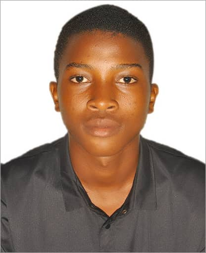

Pius Mukisa | WDD 130
Hello! My name is Pius Mukisa, and I am from Kampala, Uganda. I have a deep passion for playing football, which has been a significant part of my life. I enjoy the thrill of the game, the camaraderie with my teammates, and the valuable lessons it teaches about discipline and teamwork. Whether it's playing in local leagues or enjoying a friendly match with friends, football brings me immense joy and fulfillment. Alongside my love for football, I aspire to become a great web developer. I am excited about the endless possibilities in the tech world and look forward to combining my creativity and problem-solving skills to build innovative solutions. I’m always looking to improve both on the field and in my coding journey!.